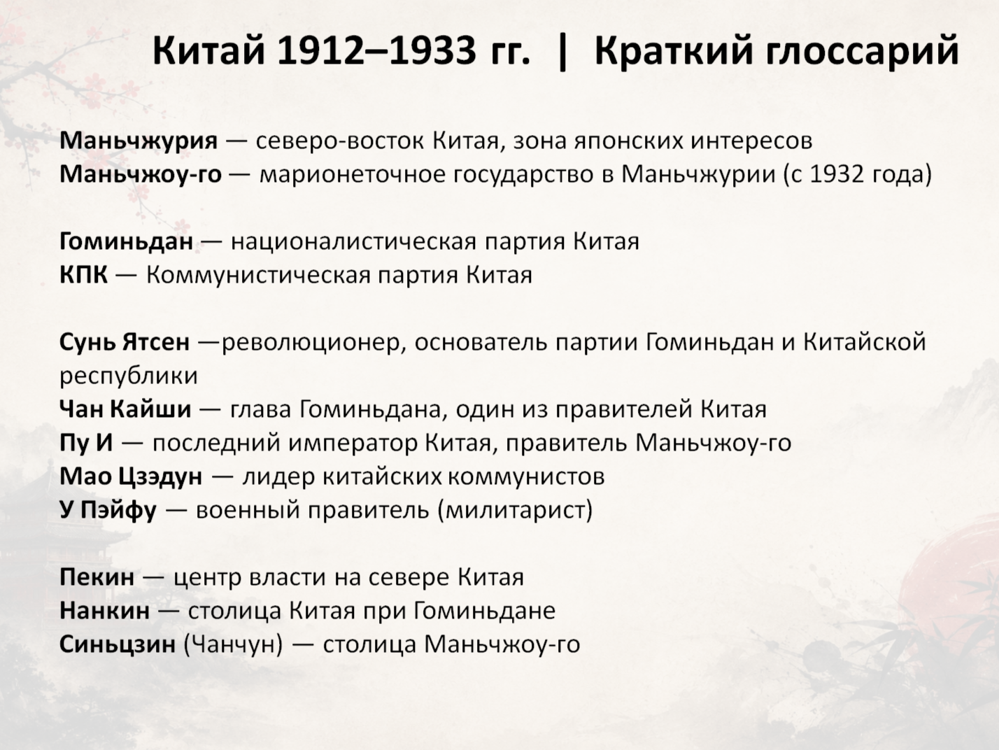
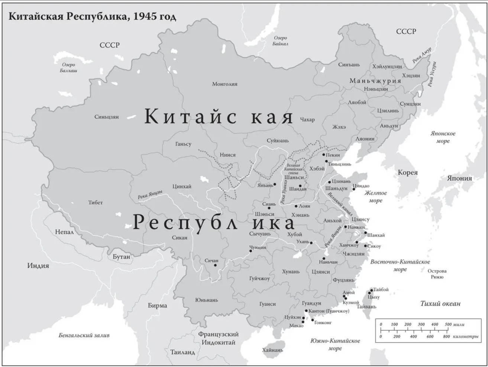

Китай в эпоху потрясений (1912–1937 гг.)
Начало XX века стало одним из самых драматичных периодов китайской истории. После более чем двух тысяч лет существования императорской системы Китай вступил в эпоху глубоких политических и социальных преобразований. Страна искала новый путь развития, сталкиваясь с революциями, внутренними конфликтами и внешними угрозами.
В 1912 году последний император династии Цин отрёкся от престола, и Китай стал республикой. Однако новая власть столкнулась с серьёзными трудностями. Различные военные лидеры стремились контролировать отдельные регионы страны, что привело к длительному периоду нестабильности.


Важнейшей фигурой периода стал Сунь Ятсен — революционер и политический мыслитель, которого называют «отцом современного Китая». Его идеи о национальном единстве, народовластии и благосостоянии оказали огромное влияние на дальнейшее развитие страны.

В этот период появляются новые политические силы, в том числе Гоминьдан и Коммунистическая партия Китая. Их сотрудничество и последующее противостояние станут определяющими событиями китайской истории XX века. Одновременно усиливалось давление со стороны Японии, что в конечном итоге привело к полномасштабной войне.
Российские и Советские газеты о Китае 1912-1937 гг.


Газеты Великобритании о Китае 1912-1937 гг.
Китайские газеты 1912-1937 гг.
Вторая Японо-китайская война 1912-1937 гг.